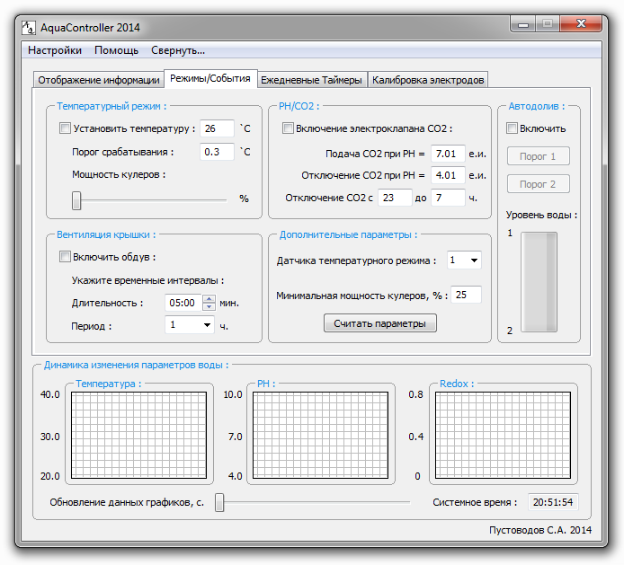

На текущей вкладке ПО AquaController 2014 отображается состояние основных автоматических режимов работы устройства. Управление каналами организованно по приоритетам. Наивысший приоритет имеют "Режимы/События", затем идут заданные таймеры, и наименьший приоритет имеет ручной режим работы. К примеру: был выбран один из автоматических режимов - управление каналами, отведенными под данный режим, переходит под управление автоматического режима. После отключения автоматического режима управление каналами перейдет к установленным таймерам (если они были заданы). По завершению временных интервалов таймеров управление каналами перейдет к ручному режиму работы (если он был задан). Активация и отключение автоматических режимов производится пользователем.

Внешний вид вкладки "Режимы/События".
Представлено 4 автоматических режима: температурный режим, режим PH/CO2, режим вентиляции крышки, режим автодолива воды.
Температурный режим. Данный режим позволяет автоматически удерживать заданную температуру воды. Указываются удерживаемая температура, порог срабатывания режима, мощность кулеров. К примеру: заданная температура 26 градусов, порог срабатывания 0.3 градуса, мощность кулеров 50%. Когда значение текущей температуры станет менее 25.7 (26 - 0.3) - включится нагреватель. При достижении температуры 26 градусов - нагреватель отключится. Когда текущая температура превысит значение 26.3 (26+0.3) - включатся кулера на заданную мощность. При достижении температуры 26 градусов - кулера отключатся. Выбор датчика для температурного режима и минимальная мощность кулеров задаются в графе <Дополнительные параметры>. Минимальная мощность кулеров задается во избежание случайной установки значения 0% мощности работы кулеров в выбранных режимах, при котором кулера будут отключены. Минимальная мощность кулеров задается для всех режимов, использующих кулера. Используются каналы: Нагреватель, Кулера 12 В.
Вентиляция крышки. Данный режим позволяет избежать накапливания конденсата в крышке, путем продувки воздуха кулерами. Указываются длительность работы кулеров и их периодичность включения. Включение кулеров происходит в начале временного часа. Используются каналы: Кулера 12 В.
PH/CO2. Данный режим позволяет автоматически управлять электроклапаном системы подачи CO2. Указываются значение PH, при котором необходимо включить подачу CO2, значение PH, при котором нужно отключить подачу CO2, а так же временной интервал, когда подача CO2 запрещена. Перед активацией режима необходимо произвести калибровку PH-электрода. Используются каналы: Клапан СО2.
Автодолив. Данный режим позволяет автоматически удерживать заданный уровень воды в аквариуме. Задаются <Порог 1> - значение датчика уровня воды, соответствующее верхней границе уровня воды (отключить помпу/электроклапан), <Порог 2> - значение датчика уровня воды, соответствующее нижней границе уровня воды (включить помпу/электроклапан). После первого включения режима - его статус будет ERROR, т.к. до этого не были заданы значения порогов включения/отключения помпы/электроклапана. Установив значения порогов срабатывания - необходимо перезапустить данный режим. После чего ошибка обнулится. Датчик уровня воды должен иметь аналоговый выход. Это может быть система, использующая какой-либо дальномер с аналоговым выходом, либо же поплавковая система, подключенная к герметичному переменному резистору. Или же любой другой метод, имеющий на выходе аналоговый сигнал. Такой подход позволяет постоянно отслеживать значение датчика и сравнивать его с предыдущими значениями, что дает представление об исправности датчика уровня воды. Это позволяет избежать главного риска текущего режима - перелива воды в аквариуме при не исправности датчиков/микриков. Если после запуска помпы/электроклапана подачи воды показания датчика не изменялись в течении 20 секунд - датчик не исправен, отключается подача воды, отображается ERROR на ЖКИ и в статусе канала <Помпа> ПО AquaController 2014. Если произошло резкое изменение показаний датчика на значение, большее чем (порог 1 - порог 2)/2, и в течении 10 секунд данные не восстановились (исключение всплеска воды, вызванного обитателями аквариума) - датчик не исправен, отключатеся подача воды, отображается ERROR на ЖКИ и в статусе канала <Помпа> ПО AquaController 2014. После перезапуска режима ошибка обнулится. Используются каналы: Помпа.
Считывание состояний и параметров режимов происходит при подключении к устройству. Если были изменены параметры режимов в текущем подключении к устройству, но появилась необходимость получить прежние значения, а так же узнать какие значения параметров находятся в EEPROM - нажмите кнопку <Считать параметры>.
После установки параметров нажмите кнопку <Записать EEPROM> на вкладке <Отображение информации>, для записи данных в энергонезависимую память контроллера.